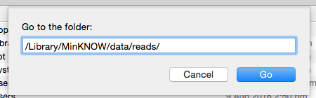

class: center, middle # Analysis I ## Theory and Fileformatting --- # Section Goals - Understand the initial data that is coming from your MinION run - What is contained within the `fast5` datafiles - What we can, and cannot, do with the data at this point --- # General pipeline so far: <img src='./images/sequencing-animated_0.gif' height = '250' /> - The MinKNOW software on the sequencing laptop facilitates the collection and parsing of data from the MinION flowcell. - This 'raw' data is voltage traces that are measured at 5khz (5 thousand times per second). - The voltage across the membrane changes as molecules enter, move through, and exit each sequencing pore. - This entire measurement is called an 'event' which will be the collected signal measurements for that molecule. --- # General pipeline so far: <img src='./images/sequencing-animated_0.gif' height = '250' /> - The software recognizes this initial voltage change and begins writing out the trace to a new `fast5` file. - There is **one file per DNA molecule** that passes through each pore. Therefore many files are created! - Hence, the requirement for high quality transfer speeds on your laptop to facilitate this (SSDs) - This is a fundamental shift from Illumina platforms in which most analysis is based off of fewer, but much larger, files. --- # The initial data is NOT basecalled - Although MinKNOW **can** do live basecalling, we have omitted that step in our workshop. - More computationally intensive - At this point, we do not have nucleotide information, just voltage traces. - We can look at this information within the `fast5` files that are created. --- # What are `fast5` files? <img src='./images/hdf5_structure4.jpg' height = '300' /> - Each file contains signal trace for a single DNA molecule - `fast5` files are stored in the `HDF5` file format. - `HDF5` acts as a larger organizational framework (box) in which different types of data can be stored in a hierarchical way. - Like directories, sub-directories, and files/data on your computer. - `HDF5` files are binary (not directly human readable) --- - The `HDF5` format is quite flexable in being able to contain a wide variety of data types internally (strings,int,float,arrays, etc) within the single 'HDF5' format. - The `fast5` files are therefore able to not only hold the signal trace, but also a wide variety of metadata related to how it was created, timestamps, software versions, etc. - The format allows for new items to be added to it over time, creating a single container from raw information onwards - We will see this shortly. <img src='./images/hdf5_structure4.jpg' height = '300' /> --- # What are `fast5` files? - The group that created the `HDF5` format [provides a java-based viewing software to download:](https://support.hdfgroup.org/products/java/release/download.html) - [HDFView for windows](ftp://130.56.254.90/pub/HDF5View_local_download/HDFView-2.13-win64.zip) - [HDFView for OSX](ftp://130.56.254.90/pub/HDF5View_local_download/HDFView-2.13.dmg) - [HDFView for Linux](ftp://130.56.254.90/pub/HDF5View_local_download/HDFView-2.13.0-centos6-x64.tar.gz) - There are also [command-line tools to viewing HDF5 files for those interested](https://support.hdfgroup.org/HDF5/Tutor/cmdtoolview.html) --- # Where are the `fast5` files located? - As sequencing begins, data beings to be filled in to the `./reads` directory within your MinKNOW install folder: As of MinKNOW v1.6.11: - Windows: `:\data\reads` - This path should be set when you install MinKNOW - OSX: `/Library/MinKNOW/data/reads/` - *note: from a finder window, can get beyond your home directory using `SHIFT + CMD + G` and directly provide this path -  - Linux: `/var/lib/MinKNOW/data` --- # Let's take a look at a `fast5` file ``` /{attributes: file_version} |-UniqueGlobalKey/ | |-tracking_id/{attributes: asic_id, asic_id_eeprom, asic_temp, device_id, exp_script_hash, exp_script_name, exp_script_purpose, exp_start_time, flow_cell_id, heatsink_temp, hostname, protocol_run_id, protocols_version_name, run_id, version, version_name} | |-channel_id/{attributes: channel_number, digitisation, offset, range, sampling_rate} | |-context_tags/{attributes: set when the experiment is configured} |-Raw/ | |-Reads/ | |-Read_42/{attributes: start_time, duration, read_number, start_mux, read_id, median_before} | |-Signal{samples} | ``` ??? On RSB laptops virtual ubuntu image, we have HDFView as well as local fast5 files to examine Go through opening one of these files show the two main folders 'raw' as well as 'uniqueGlobalKey' Raw contains the initial signal informaiton for that event The other contains a large number of metadata records in regards to the time, read, pore channel, time of run, etc etc Try to plot the signal data just for the hell of it from HDFView to get a sense of what is in there. --- # Additional Notes - Remember that **everything is rapidly-changing!** What you learn now will likely be redundant and/or wrong with the MinION practices six months from now. - ONP wants to move towards elimination of `fast5` files and have MinKNOW basecall directly to fastq files (you never seen these steps) - This is largely useful information for those interested in the deep technical information of MinION as well as those interested in working directly with sequence traces (new basecalling methods, etc)